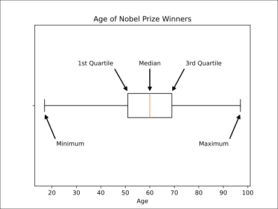

A box plot is a graph used to show key features of quantitative data.
A box plot is a good way to show many important features of quantitative (numerical) data.
It shows the median of the data. This is the middle value of the data and one type of an average value.
It also shows the range and the quartiles of the data. This tells us something about how spread out the data is.
Here is a box plot of the age of all the Nobel Prize winners up to the year 2020:
The median is the red line through the middle of the 'box'. We can see that this is just above the number 60 on the number line below. So the middle value of age is 60 years.
The left side of the box is the 1st quartile. This is the value that separates the first quarter, or 25% of the data, from the rest. Here, this is 51 years.
The right side of the box is the 3rd quartile. This is the value that separates the first three quarters, or 75% of the data, from the rest. Here, this is 69 years.
The distance between the sides of the box is called the inter-quartile range (IQR). This tells us where the 'middle half' of the values are. Here, half of the winners were between 51 and 69 years.
The ends of the lines from the box at the left and the right are the minimum and maximum values in the data. The distance between these is called the range.
The youngest winner was 17 years old, and the oldest was 97 years old. So the range of the age of winners was 80 years.